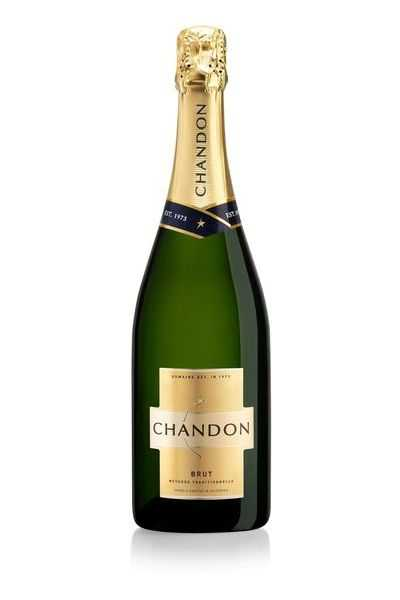

Reims is a city in northeastern France's Grand Est region. It's the unofficial capital of the Champagne wine-growing region, and many of the champagne houses headquartered there offer tastings and cellar tours. For more than 1,000 years, French kings were crowned at its Cathédrale Notre-Dame de Reims.
Champagne

Ingredients
For the Champagne
1. Grapes
2. Yeast
3. Sugar
4. Sulfites
5. Fining agents
6. Liqueur d’expédition
7. Quercus suber
METHOD OF PREPERATION
STEP 1 First Fermentation : All Champagne makers start by making a still wine. Depending on where in the world this wine is being made, different grapes may be used. In Champagne, the most popular grapes are Pinot Noir, Chardonnay and Pinot Meunier.
STEP 2 Blending: Once the still wine is ready to go, many Champagne houses carefully blend the wine to produce their unique house style. In the best years, Champagne houses may produce a vintage-dated bottle using only grapes from that year.
STEP 3 Second Fermentation:The secondary fermentation is the key step to the wine getting its bubbles. The wines are bottled, and a mixture of wine, sugar and yeast is added to each bottle, and a crown cap is put on the bottle. The bottles are then stored horizontally and the second fermentation begins when the yeast slowly converts the sugar to alcohol and carbon dioxide.
STEP 4 Lees Aging: A byproduct of this secondary fermentation is spent yeast cells, called lees, and the wine will now age on the lees for some time before they get removed from the bottle. Champagne itself has strict production rules and all producers must age their bottles on the lees a minimum of 15 months for non-vintage wines and 3 years for vintage-dated bottles. In wine producing regions without such strict rules, the amount of time the wine is in contact with the lees can vary widely.
STEP 5 Riddling: After the determined length of aging, producers need to remove the lees by going through a process called riddling. Bottles are placed on special racks at a 45º angle, and every few days the bottles are turned and given a small shake to move the spent yeast cells and sediment down toward the neck of the bottle. The angle of the racks is gradually increased during this process and eventually the bottles are vertical and the neck of the bottle contains all the yeast ready to be removed.
STEP 6 Disgorgement: Through a process called disgorgement, the spent yeast cells are removed from the bottle. The neck of each bottle is gently dipped into a freezing solution, causing the yeast cells to freeze together.
STEP 6 Dosage: The small amount of wine lost through disgorgement is then replaced with a dosage, or a small amount of still wine with a particular level of sweetness. The amount of sweetness in that still wine determines the overall sweetness of the wine and will dictate how it will be labeled for the consumer
STEP 7 Corking: With the dosage added, the final cork can now be inserted into the bottle and covered with a wire cage to help the cork stay in the bottle despite the pressure inside the bottle from the bubbles. Bottled for consumption, the Champagne will now rest for either a few weeks or several years, depending on the winery and style desired.
BEST RESTAURANTS FOR CHAMPAGNE IN REIMS Brasserie Le Clairmarais Located in the heart of Reims in the Clairmarais district, this brasserie with a warm, modern and chic atmosphere, seating 50, is a clever mix of the “Brasserie” and “Restaurant” spirit. The air-conditioned establishment also has a beautiful terrace open in fine weather.
L’Atelier This adorable stone house, home to an inviting bistro inn, is five minutes from the peaceful Brittany village of Guéméné-sur-Scorff. This rural idyll i...